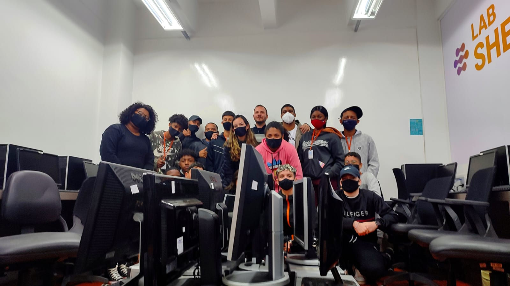
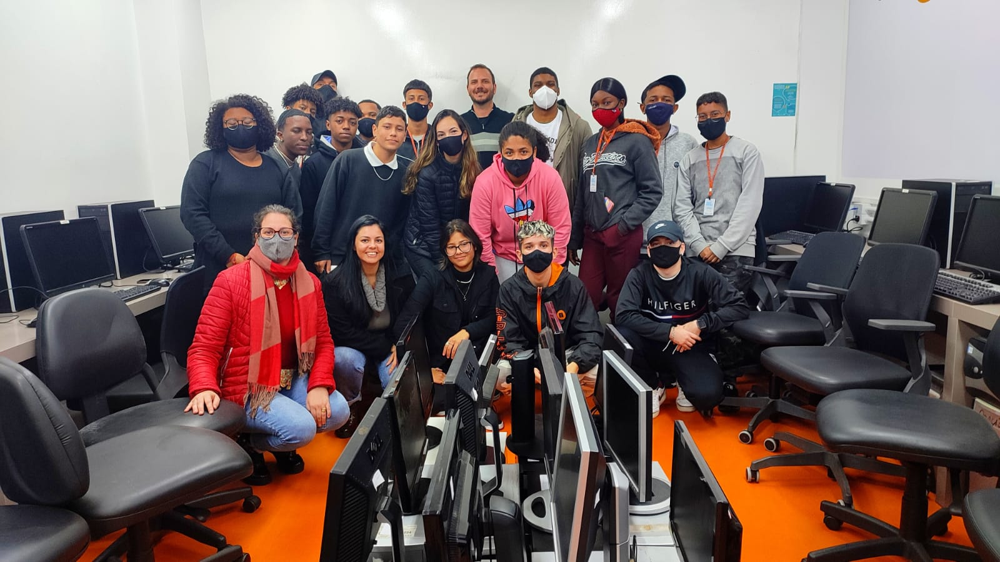

© Todos os Direitos Reservados - 2023.
© Todos os Direitos Reservados - 2023.
O Serviço Nacional de Aprendizagem Comercial – Senac é uma instituição de educação profissional, fundada em
10 de janeiro de 1946 com o objetivo de colaborar na obra, difusão e
aperfeiçoamento do ensino profissional no setor terciário. No Rio Grande do Sul, o Senac foi instalado em 13
de setembro do mesmo ano e nos mais de 70 anos de atuação já capacitou
mais de 8 milhões de gaúchos. A instituição cumpre a importante missão de educar para o trabalho em
atividades do comércio de bens, serviços e turismo. O Senac-RS faz parte da
Federação do Comércio de Bens e Serviços do Rio Grande do Sul – Fecomércio-RS, o que vincula a entidade ao
mundo do trabalho por meio de 530 mil empresas do comércio de bens,
serviços e turismo – que geram um milhão de empregos formais.
O Senac-RS disponibiliza educação em todos os níveis – do Menor Aprendiz à Pós-Graduação. Atualmente, a
entidade conta com duas faculdades – Faculdade Senac Porto e Faculdade
de Tecnologia Senac Pelotas, e mais de 60 postos de atendimento, entre escolas e unidades, que possibilitam
o Senac atender a todos os 497 municípios gaúchos.
Muito antes de se falar em responsabilidade social, o Senac já exercia, na prática, a inclusão social ao
preparar menores aprendizes para o mundo do trabalho. Mais do que ser a sua razão
de existir, o Menor Aprendiz é a prova da importância e contribuição da Instituição para a educação
profissional brasileira. Vinculados ao programa Jovem Aprendiz, por meio da Lei Federal
10.097/200 e Decreto nº 5598/2005, os cursos de Aprendizagem Comercial, oferecidos gratuitamente pelo
Senac-RS, envolvem os alunos em aulas que variam de 1.100 a 1.200 horas de atividades
curriculares, das quais metade se referem à capacitação teórica e a outra metade à prática supervisionada
(realizada nas dependências da empresa).
O Programa Senac de Gratuidade (PSG), resultado de um acordo entre o Senac e o Governo Federal em 2008,
significa educação profissional de qualidade para que milhares de pessoas possam
planejar seus estudos e ter mais oportunidade de trabalho e emprego. O PSG oferece cursos de Aprendizagem,
cursos de nível técnico, qualificação técnica, cursos de capacitação e
aperfeiçoamento, totalizando mais de 10 mil alunos atendidos gratuitamente nas unidades educacionais do
Estado. Para ter acesso a esses cursos, os candidatos deverão atender aos seguintes
critérios: pessoas com baixa renda, na condição de alunos matriculados ou egressos da educação básica e
trabalhadores – empregados ou desempregados-, priorizando-se aqueles que satisfizerem
as duas condições (aluno e trabalhador). Além disso, a Instituição desenvolve diversos projetos sociais em
parceria com empresas e organização não-governamentais (ONG´s).
Considerando a rapidez das informações e do desenvolvimento tecnológico, o Senac oferece cursos de
capacitação em horários alternativos, aplicando metodologias diferenciadas e personalizadas,
laboratórios de alta tecnologia, atendimentos individualizados em ambientes modernos e confortáveis. Nos
diversos níveis de capacitação, através de aulas presenciais ou à distância, o modelo
pedagógico está baseado na apropriação de competências para o trabalho. O Senac propõe a qualificação de um
indivíduo capaz de articular conhecimentos, habilidades e atitudes com o objetivo de
agir, decidir e intervir em situações nem sempre previstas dentro e fora do mundo do trabalho, promovendo a
construção da cidadania.
Isabel Cassiana Lauck da Rosa
DICÇÃO.DESINIBIÇÃO.ORATÓRIA
O curso de Dicção do Senac Taquara ajudou muito na minha postura e segurança
para falar em público. Depois deste curso tenho mais consciência da
importância da comunicação em nossas vidas. As aulas foram bem interativas
e práticas, a escola é muito acolhedora e com ótimo atendimento.
Matheus Flôres
Téc. Informática 2014.10 M. 1
Desde pequeno, eu sempre tive muita afinidade com a área da informática e, até por isso, resolvi fazer o
curso.
O método de ensino, as propostas feitas pelos professores, os laboratórios, entre outras atividades,
me
roporcionaram uma evolução que eu nem achei que fosse possível. Aprendi a trabalhar em equipe, a lidar
com problemas,
além de ter uma turma maravilhosa, sempre unida. Na escola, ganhei muitos amigos que quero levar para a
vida toda.
Para quem possui computadores desktop, laptop, monitores, teclado e mouse que não utiliza mais e não sabe como
descartá-los da maneira correta, eles podem
ter um destino útil e solidário. Isso porque o Senac Tech recebe anualmente doações em sua escola por meio do
PIDS Tech — Programa de inclusão digital
Senac Tech — , que consiste em coletar computadores para que instituições, escolas, ONGS, ou até mesmo alunos da
escola, que ainda não tenham condições
financeiras para a compra desses equipamentos, possam ter acesso à informação e às tecnologias.
Os equipamentos podem ser entregues ao longo de todo o ano de 2023 no endereço do Senac Tech, que está
localizado na Avenida Venâncio Aires,
93, no bairro Cidade Baixa, em Porto Alegre. A iniciativa já ocorre há sete anos e é uma ação pedagógica
coordenada pelo docente do curso
Técnico em Informática Miguel Angelo Matiolla com seus alunos.
Só em 2022, foram doados mais de 100 computadores para a comunidade. “Para os nossos alunos, além de
colocarem em prática todo conhecimento
(Hard Skills) adquirido no curso, realizando a manutenção desses computadores para doação, incentivamos
também o desenvolvimento de suas
habilidades e atitudes (Soft Skills). Por meio dessa ação social, percebemos uma imensa satisfação dos
nossos alunos que participam do projeto,
principalmente por mudarem a vida das pessoas contempladas”, ressalta Matiolla.
No módulo de Assistente de Suporte e Manutenção de Computadores, do curso Técnico Informática, os alunos
desenvolvem todos os conhecimentos
necessários para realizar a manutenção e configuração de microcomputadores. Diante disso, eles conseguem
aplicar todo o conhecimento adquirido
no curso juntamente com o fornecimento de computadores e seus periféricos, considerados inativos para uso,
vindos de empresas privadas, públicas
ou até de pessoas físicas.
Mais informações podem ser obtidas pelo telefone (51) 3288-7750 ou pelo e-mail do setor pedagógico da
instituição pdgtech@senacrs.com.br.
 
© Todos os Direitos Reservados - 2023.